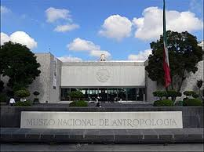
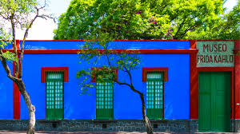
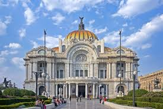

Descubre las Maravillas de la CDMX
Actividades, museos y monumentos que no te puedes perder.
Sección 1: Museos e Historia Imprescindible
Museo Nacional de Antropología: Ubicado en el Bosque de Chapultepec, es una obra maestra de la arquitectura que resguarda la colección más grande de arte prehispánico de México, incluyendo la famosa Piedra del Sol (Calendario Azteca).

Museo Frida Kahlo (La Casa Azul): Situado en el bellísimo barrio de Coyoacán, este lugar te permite sumergirte en el universo íntimo, los objetos personales y las pinturas de la artista más icónica de México.

Palacio de Bellas Artes: El máximo recinto cultural del país, famoso por su fachada de mármol blanco de estilo Art Nouveau y sus impresionantes murales interiores de Diego Rivera y David Alfaro Siqueiros.
